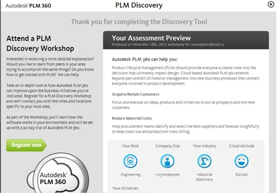
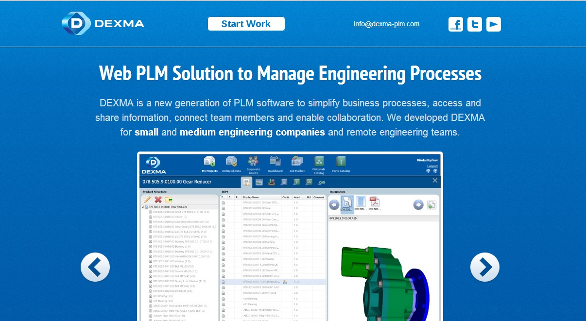

Autodesk PLM 360
Autodesk PLM 360 - это новое решение по управлению жизненным циклом продукции (PLM), основанное на «облачных» технологиях. В отличие от традиционных PLM-решений – как правило, сложных и дорогостоящих – Autodesk PLM 360 можно легко и быстро установить и настроить под специфику промышленных предприятий. Это «облачное» приложение предназначено для использования не только в области управления инженерными данными и составами изделий (BOM), но и в других сферах бизнеса. С его помощью сотрудники, решающие самые различные задачи: от планирования и разработки до обеспечения качества и послепродажного обслуживания, – могут получить расширенный доступ к необходимой информации, что позволяет им постоянно совершенствовать изделия, которые они разрабатывают и производят. Autodesk PLM 360 может быть интегрирован с уже установленными на предприятии системами, в том числе с системой Autodesk Vault, предназначенной для управления данными о продукции (PDM).
Внедрение:
http://www.electronvault.com/ - компания electronvault, разрабатывая и поставляющая экологичные решения для накопления энергии.
http://roulunds-braking.eu/ - компания, производящая детали для автомобилей
Teamcenter
Teamcenter — распространенная во всем мире система управления данными о жизненном цикле изделия (PLM) компании Siemens PLM Software. Teamcenter обеспечивает коллективную разработку инновационных решений и повышение производительности труда, предоставляя специалистам предприятий доступ к необходимой информации об изделиях и процессах для эффективного выполнения задач в распределенной среде. Программные решения Teamcenter для управления данными о жизненном цикле изделия созданы на основе открытой платформы PLM, которая обеспечивает высокую эффективность управления процессами на всех этапах жизненного цикла изделий.
Внедрение:
ОАО «Авиадвигатель» - http://www.avid.ru/
ОАО «НПО «Искра» - http://www.npoiskra.ru/
ОАО «УАЗ» - http://www.uaz.ru/
ФГУП «ММПП «Салют» - http://salut.ru/
ОАО «ОКБ Сухого» - http://www.sukhoi.org/
Shenzhen Hangsheng Electronics - http://www.hangsheng.com/
SKODA AUTO - http://www.skoda-avto.ru/
Zollner Elektronik AG - http://www.zollner.de/
Parametric Technology Corporation Windchill

-PLM от компании Parametric Technology Corporation. Включает в себя несколько модулей:
1. управление данными об изделии и процессами его разработки (Windchill PDM Link);
· Интеграция с САПР: сохранение и предоставление данных о структуре изделия, составе и визуализация трёхмерных моделей из машиностроительных и электротехнических/электронных САПР, включая Pro/ENGINEER, CADDS 5, AutoCAD, Inventor, SolidWorks,CATIA4,CATIA5, Unigraphics, I-DEAS, Mentor Graphics, Cadence и др.
· «Нисходящее» проектирование: использование «нисходящего» механизма проектирования, то есть либо предварительное создание структуры изделия и проектирования затем САПР-моделей для заполнения соответствующих предусмотренных элементов заданной ранее структуры всего изделия, либо редактирование уже полученной структуры изделия для получения на его базе нового изделия.
· Интеграция с приложениями MS Office: появляется возможность использовать основные операции Windchill PDMLink, такие как поиск, запись в архив, выписка из архива и др. непосредственно в приложениях Microsoft Office или с рабочего стола Windows. Атрибуты документа могут быть сохранены непосредственно в базе данных Windchill PDMLink, что даёт возможность пользователю производить поиск по атрибутной информации в Windchill PDMLink.
· Полнотекстный поиск: поиск информации с использованием встроенного механизма Convera RetrievalWare, который выполняет эффективный контекстный и атрибутивный поиск по ключевым словам.
2. планирование конструкторско-технологической подготовки производства (Windchill ProjectLink)
Windchill ProjectLink позволяет:
· Планировать и контролировать любой бизнес-процесс за счёт вовлечения в совместную работу всех участников как внутри, так и, в случае необходимости, вне предприятия, включая в проект любых соисполнителей из любых организаций.
Внедрение:
Hyundai Motor Company and Kia Motors Corporation - http://www.hyundai.com/ru/ru/Main/index.html , http://www.kia.ru/
оао «автодизель» - http://avtodizel.gaz.ru
ФГУП ГНПРКЦ - http://www.samspace.ru/
ЗАО «Атлант» - http://www.atlant.by/
T-FLEX PLM+

T-FLEX PLM+ - новое полномасштабное решение в области управления жизненным циклом изделий и организации деятельности предприятий. Лежащий в его основе набор программ T-FLEX CAD/CAM/CAE/CAPP/PDM/CRM… позволяет эффективно организовать работу на всех этапах жизненного цикла изделия, а также расширить стандартные границы PLM-решений дополнительными возможностями по управлению всеми процессами, сопутствующими выпуску продукции. Комплекс программ, поставляемый одним производителем - компанией «Топ Системы» - дает возможность организовать единую среду конструкторского и технологического документооборота, проектирования и подготовки производства. Пользователи получают широкие возможности по управлению номенклатурой и структурами изделий, автоматизации любых бизнес-процессов предприятия, а также инструменты интеграции с различными ERP-системами, что позволяет обеспечить чёткое взаимодействие всех сотрудников.
Аскон ЛОЦМАН:PLM
Система ЛОЦМАН:PLM является центральным компонентом Комплекса решений АСКОН и обеспечивает:
- централизованное структурированное хранение технической документации на изделие;
- управление информацией о структуре, вариантах конфигурации изделий и входимости компонентов в различные изделия;
- управление процессом разработки изделия; интеграцию компонентов Комплекса — САПР, САПР ТП, корпоративных справочников
Система ЛОЦМАН:PLM аккумулирует всю информацию, необходимую для конструкторско-технологической подготовки производства продукции машиностроительного предприятия. На этапе подготовки производства система обеспечивает накопление данных о результатах конструкторско-технологического проектирования и обмен информацией между инженерными службами.
Утвержденные данные и документация передаются в соответствующие службы предприятия для материально-технического обеспечения, производства и эксплуатации выпускаемых изделий. При помощи ЛОЦМАН:PLM может быть организовано управление изменениями производственной документации.
АСКОН DEXMA
DEXMA Labs — внутренний стартап АСКОН, инвестиционный проект по созданию системы нового поколения для управления проектированием, логистикой и производством. Проект полностью финансируется за счет средств АСКОН. Подразделение наделено полной самостоятельностью, оно не входит в базовую структуру разработки АСКОН. В DEXMA Labs отчетливо формулируют свою задачу — создание конкурентной системы управления полным циклом «проектирование-производство» для СМБ. Основными рынками для DEXMA являются Северная Америка и Европа, в первую очередь Германия.
Изучив существующие решения, в том числе и собственные решения АСКОН, специалисты DEXMA пришли к выводу, что они не удовлетворяют требованиям предприятий ни по целостности, ни по ценовой политике. Если создать систему, в которой ликвидированы эти недостатки, руководители DEXMA считают, что можно добиться значительного успеха в освоении рынка. Впрочем, в DEXMA не витают в облаках и трезво отдают себе отчет в том, что у них уже есть грозный конкурент в лице Autodesk PLM 360